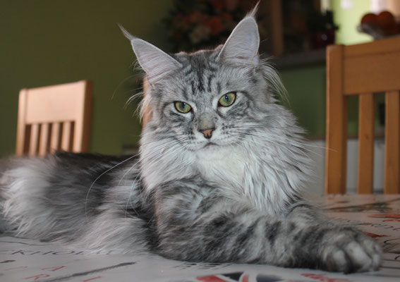
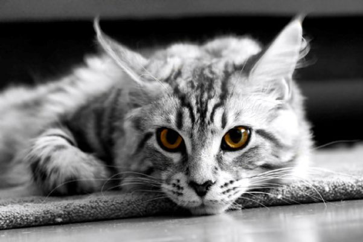

Le Maine Coon black silver (noir et argenté en Français) se différencie des autres Maine Coon par sa beauté unique. La première partie du nom de la race, Maine, fait référence au nom de l'État américain dans lequel cette race de chat a été trouvée à l'origine. La deuxième partie, Coon, vient du nom anglais du raton laveur Racoon, car sa queue touffue et rayée est similaire à celle du raton laveur. Autrefois, les habitants du Maine pensaient que les Maine Coons étaient un croisement entre des chats domestiques et des ratons laveurs, mais il est clair aujourd'hui que cela n'est pas possible génétiquement.
On raconte également que ces chats sont arrivés avec les marins. Lors des voyages en bateau, les chats étaient emmenés pour débarrasser les navires des rats et des souris. Il s'agissait de chats à la fourrure plus longue et ils pourraient très bien être les ancêtres des chats angoras, des chats persans ou des chats des forêts norvégiennes, qui sont ainsi arrivés en Amérique du Nord et se sont accouplés avec les chats domestiques locaux. Il serait donc tout à fait possible que les chats des forêts norvégiennes et les Maine Coons soient proches parents. De nombreuses autres histoires sont racontées à propos de cette race de chat, notamment qu'un capitaine nommé Coon aurait ramené ces chats.
On pouvait déjà voir des Maine Coons lors des toutes premières expositions. Le capitaine Jenks fut le premier mâle Maine Coon à remporter une exposition en 1861. Avec l'apparition des chats persans aux États-Unis, la popularité du Maine Coon a diminué. Il continuait cependant à être apprécié comme chat de compagnie, car il est un chasseur de souris habile. Mais dans les années 50 du 20e siècle, cette race redevint populaire et un club de Maine Coons, le Central Maine Cat Club, fut créé. Des expositions exclusivement réservées à cette race ont même été organisées. Ainsi, de plus en plus de ces beaux chats arrivèrent en Europe et de plus en plus d'éleveurs adoptèrent cette race afin de préserver l'apparence originale du Maine Coon.
